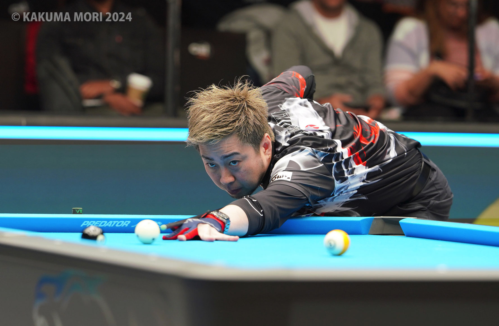

01
On-site reporting
Event notes, match context, Japanese-player updates, and tournament stories for readers who are following from Japan.

Billiards writer / photographer / interviewer
I cover international pool events for Japanese billiards media, with field reporting, player interviews, photography, and English-to-Japanese editorial work.
Photo: K. Mori / Billiards Days
What I do
01
Event notes, match context, Japanese-player updates, and tournament stories for readers who are following from Japan.
02
Short-form and feature interviews with players, referees, event organizers, and equipment makers.
03
Tournament atmosphere, player portraits, match action, and usable editorial photos for Japanese billiards publications.
04
English interviews, podcasts, and technical material shaped into readable Japanese articles for billiards fans.
Selected public credits
Public links found on Billiards Days and Web CUE'S. The list can be expanded as more links or magazine pages are added.
Coverage range
Authored a Japanese explainer on FargoRate for Billiards Days and translated Pleasures of Small Motions.
Covered Puerto Rico events for Web CUE'S and Billiards Days, including photography and international-player interviews.
Reported from Puerto Rico and produced interviews with players, event operators, and equipment-related subjects.
Provided Las Vegas event photography for Billiards Days and continued Web CUE'S World Top Interview work.
Selected photography
A selection area for match action, interview moments, equipment, venues, and the quiet details that make an international event feel real.
For event staff and players
Kakuma Mori contributes to Japanese billiards media including Web CUE'S and Billiards Days. Available for interviews, event coverage, editorial photos, and Japanese-language reporting from international pool tournaments.